London, 1895. Close to midnight, Dr. Watson climbs the stairs at Baker Street with a question he can't answer alone.
He has a dying patient in terrible pain. The medicine that would stop the pain might also shorten the man's life. Sherlock Holmes will help him test the rule doctors use for cases like this.
Use → (or Next) to advance and reveal points. F = fullscreen.
Where You Stand Now
Rate each statement. There are no right answers, and you'll rate them again at the end.
A doctor who gives a dying patient enough medicine to stop the pain has done nothing wrong, even if it shortens the patient's life.What you were trying to do matters to whether your act was right, not only what happened.Letting someone die is not as bad as killing them.If two acts have the same result and the same motive, they are equally right or wrong.You can judge whether an act was right without knowing what the person intended.
Holmes and Watson
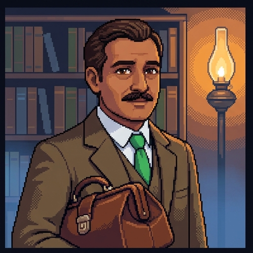
Watson
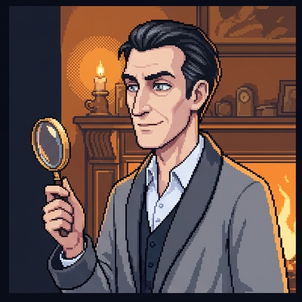
Holmes
Dr. John Watson is a physician. Tonight he must decide how to treat a dying man.
Sherlock Holmes is a detective. His skill is working out what people meant to do from what they did.
That skill matters here. The rule Watson was taught says the rightness of his act depends on what he intends.
The two of them belong to the 1890s. The rule they are testing is used in hospitals and courts today.
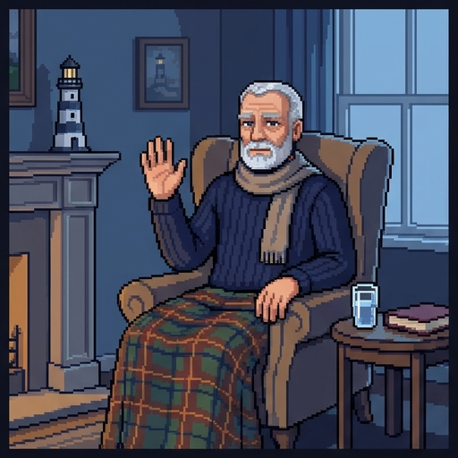
Watson's Patient
The patient is Mr. Thorne, a retired lighthouse keeper.
He has cancer of the throat. It can't be cured, and he has a few weeks to live.
The pain is severe and getting worse. The doses that used to control it no longer work.
His mind is clear. He has asked Watson for enough medicine to stop the pain.
Watson has told him the risk, and Mr. Thorne accepts it.
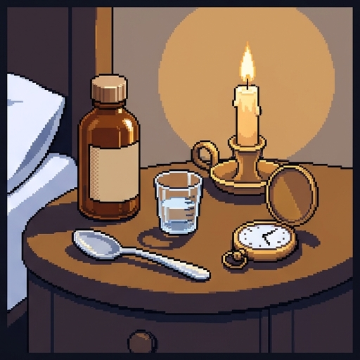
The Dose
The medicine is morphine, a strong painkiller that doctors still use.
Morphine relieves severe pain. It also slows a person's breathing.
The dose Mr. Thorne now needs is large. In a man this weak, it might shorten his life.
"If I give it and he dies tonight, Holmes, have I killed him?"
Doctors have long had a rule for this question. It is called the doctrine of double effect.
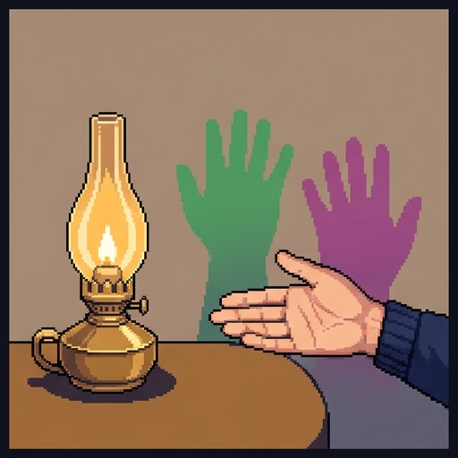
One Act, Two Effects
An effect is something an act causes. One act can have several.
A dentist drills a tooth. One effect is a repaired tooth. Another is pain.
The dentist intends the repair. It is what she is trying to bring about.
She only foresees the pain. She knows it will come, but it is not her aim, and she would avoid it if she could.
Double effect is about acts like this one, with a good effect you intend and a bad effect you only foresee.
The Doctrine of Double Effect
The idea goes back to Thomas Aquinas in the 1200s. He asked how it could be right to kill an attacker to save your own life.
His answer: you aim at saving your life. The attacker's death is a second effect that you did not aim at.
Later thinkers turned his answer into four conditions.
The doctrine of double effect says an act with a bad effect is permitted only if it passes all four.
Conditions 1 and 2
Holmes writes the conditions on the back of an envelope and tests Watson's dose against each.
1. The act itself is not wrong. Giving a patient medicine is ordinary care, so the dose passes.
2. You intend only the good effect. Watson aims at relief. The risk to life is foreseen and not aimed at.
Holmes has a test for condition 2. Suppose the pain stopped and Mr. Thorne lived on. Would Watson be content?
He would. So Mr. Thorne's death is no part of what Watson is trying to do.
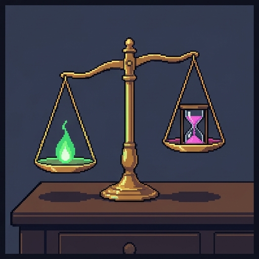
Conditions 3 and 4
3. The bad effect is not the means. A means is the way you get a result.
The morphine stops the pain directly. It does not work by ending his life, so his death is not the means.
4. The good is in proportion to the bad. The reason must be serious enough to justify the risk.
Severe pain in a dying man is a serious reason. Watson's dose passes all four conditions.
Two Doses
Holmes imagines a second doctor at the same bedside, giving the same drug in the same amount.
Gives the amount needed to stop the pain, and accepts that it may shorten life.
If Mr. Thorne wakes tomorrow free of pain, Watson's plan has worked.
Gives the same amount in order to end the patient's life, because death will end the pain.
If Mr. Thorne wakes tomorrow free of pain, this doctor's plan has failed.
The doctrine permits the first dose and forbids the second.
Test the Conditions
What the Doctrine Says
A bad effect you foresee but do not aim at can sometimes be permittedThe bad effect must not be the way the good effect is producedThe good effect must be serious enough to justify the bad oneA good intention makes any act acceptable, whatever the act isYou are not responsible for an effect that you did not intendOnly the results of an act matter, not what the person aimed at
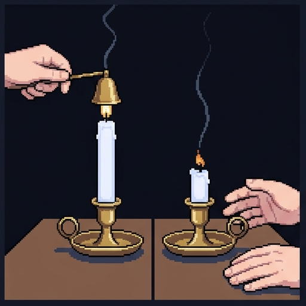
Killing and Letting Die
Double effect is one of two distinctions doctors rely on at the end of life. This is the second.
Killing is causing a death by what you do. Letting die is not preventing a death that something else causes.
A patient may refuse a treatment. If the doctors then stop it, the disease causes the death.
On the traditional view that is letting die, and it can be right even where killing would be wrong.
Both candles go out. The traditional view says it matters how.
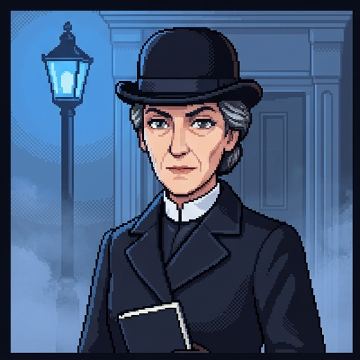
Medicine and the Law
Inspector Lestrade likes her rules written down. Here are two real ones, from long after her time.
In 1973 the American Medical Association said doctors must not intentionally end a patient's life.
The same statement allowed stopping treatment that only prolongs dying, if the patient or family decides.
In 1997 the US Supreme Court ruled, in Vacco v. Quill, that states may ban doctors from helping patients end their lives.
The Court said refusing treatment is different. So is pain relief that may hasten death, when the aim is to ease pain.
The Two Pillars
The traditional view of care for the dying stands on both distinctions.
What matters is what the doctor aims at. A foreseen death can be permitted. An intended death cannot.
Permits Watson's dose. Forbids the same dose given in order to end a life.
What matters is whether the doctor causes the death or allows the disease to cause it.
Permits stopping a treatment the patient refuses. Forbids giving a drug to cause death.
Which Pillar?
Intending vs. foreseeing: the doctor did not aim at the patient's deathKilling vs. letting die: the illness caused the death, not the doctorProportion: the benefit of stopping was larger than the harm it didNeither one: the doctor is only reporting what the patient asked for
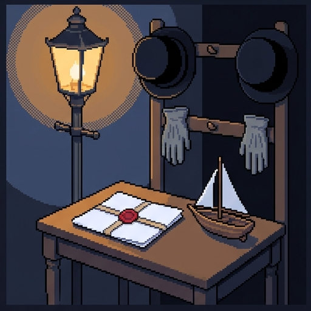
Holmes Brings a Case
Holmes has a case to test the second pillar. It comes from the philosopher James Rachels, who published it in 1975.
Rachels used a twin case: two stories that are the same in every way but one.
If you judge the two stories the same, then the one difference did not matter.
Two men, Smith and Jones, will each inherit a fortune if their six-year-old cousin dies.
Both want the money. Both plan to drown the child in his bath.
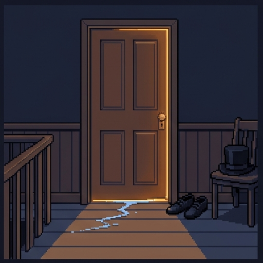
Smith
One evening Smith slips into the bathroom while the child is in the bath.
He drowns the boy, and then arranges things to look like an accident.
Smith killed his cousin.
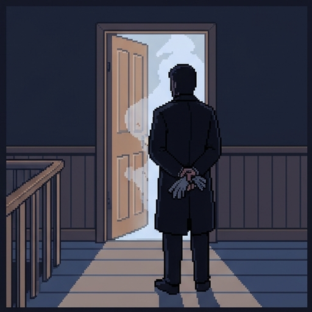
Jones
Jones slips in with the same plan. As he enters, the child slips, hits his head, and falls face down in the water.
Jones is delighted. He stands by, ready to push the boy's head back under if he has to.
He does not have to. The child drowns while Jones watches.
Jones let his cousin die.
Decision Point: Smith and Jones
No. They are equally bad.Yes, slightly. At least he didn't do it himself.Yes, clearly. Watching is not murder.
What Rachels Concludes
Smith killed and Jones let die. That is the only difference between them, and it made no moral difference.
So Rachels argues that killing is not worse in itself than letting die. What matters is the motive and the result.
His second point is about patients like Mr. Thorne. Being allowed to die can mean days of suffering.
If death is coming either way, he asks why the slower and more painful way should be the one allowed.
Replies to Rachels
Watson is not convinced, and neither were many philosophers.
Jones was ready to kill. Winston Nesbitt replied that this is why he seems as bad as Smith. A Jones who would never have touched the boy seems less bad.
One pair is not every pair. Showing that the difference did not matter here does not show that it never matters.
The line was always intention. Thomas Sullivan replied that the traditional view forbids aiming at death, by acting or by standing back.
If Sullivan is right, everything rests on the first pillar: intending versus foreseeing.
What the Twin Case Shows
In this pair, killing versus letting die made no moral differenceKilling and letting die are morally the same in every possible caseWhat a person intends never affects whether their act was wrongJones did nothing wrong, because he never laid a hand on the child
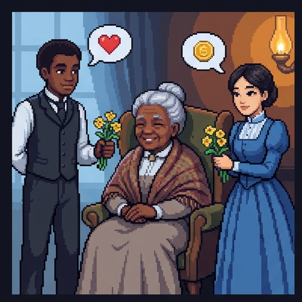
Jack and Jill
Now the first pillar. Rachels has a twin case for intention too.
Jack visits his sick, lonely grandmother and spends the afternoon cheering her up. He loves her.
Jill visits her grandmother and does the same things. She is hoping to be remembered in the will.
Their acts are alike in every way you could see. Only their intentions differ.
Rachels asks: did Jack do the right thing and Jill the wrong thing?
Criticism 1: The Person, Not the Act
Rachels' answer: they did the same thing, and it was a good thing to do. Jill's grandmother was comforted too.
Jill's intention tells you about Jill. She is calculating. It does not change what she did.
Now apply that to the two doses. If the dose is right when Watson gives it, how can the same dose be wrong when the other doctor gives it?
On this view, intention is for judging people. It cannot turn a right act into a wrong one.
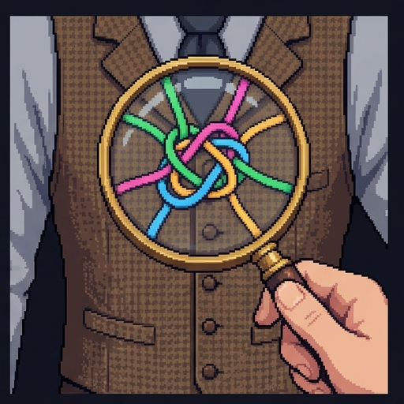
Criticisms 2 and 3: Reading a Mind
Redescription. Almost any doctor can say, "I only meant to stop the pain." The doctrine cannot tell an honest report from a convenient one.
Mixed motives. Timothy Quill, a doctor who cares for dying patients, wrote that real intentions come tangled together.
A doctor may want the pain to stop, hope the dying is short, and fear being blamed, all in the same moment.
Quill argued that the patient's wishes and suffering are better guides than a search of the doctor's mind.
A Fact That Changes the Example
Modern research adds something the philosophers often leave out.
Studies of dying patients find that morphine, raised step by step to match the pain, rarely shortens life.
The body gets used to the drug's effect on breathing. Carefully managed doses are safer than most people assume.
So the case where relief truly risks death is less common than the textbooks suggest.
The doctrine still matters for the cases that remain. It also matters because a doctor who fears the risk may give too little.
The Defenders Reply
Watson defends the rule he was taught.
Another Holmes, the judge Oliver Wendell Holmes Jr., wrote that "even a dog distinguishes between being stumbled over and being kicked."
The law agrees. A murder and an accident can have the same result, and intent is what separates them.
Intentions can be hard to read, but courts work them out from evidence every day.
Without the doctrine, a doctor who fears being called a killer may leave patients like Mr. Thorne in pain.
Four Doctors, One Outcome
Name That Argument
Pick the argument each speaker is using.
"She's a schemer, I grant you. But the old lady had her visit all the same."
judges the person"Afterwards every one of them says the same thing: he was only treating the pain."
redescription"I wanted her comfortable. I also wanted it over, for her sake and for mine. Which was my aim?"
mixed motives"We jail the man who meant to do it and free the man who slipped. Juries can tell them apart."
intent in law
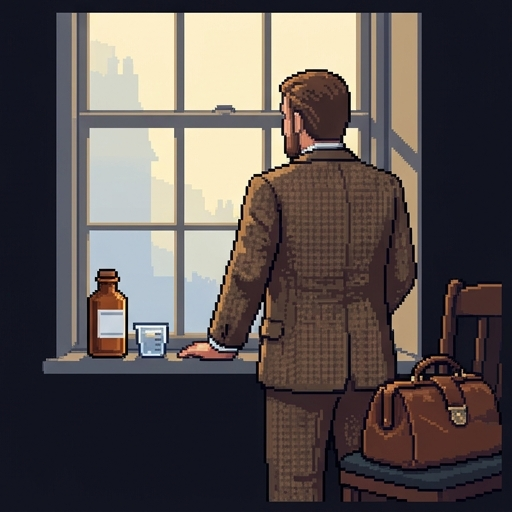
Decision Point: Watson's Dose
Give the dose. His aim is relief, so it is not killing.Give the dose. Mr. Thorne asked for it, whatever Watson's aim.Give a smaller dose and accept that some pain remains.Don't give it. The risk of causing his death is too great.
Where You Stand Now
These are your ratings from the start. Rate each statement again.
The Case, Summed Up
Double effect: a foreseen bad effect can be permitted if the act, the aim, the means, and the proportion all pass.
The two pillars: intending versus foreseeing, and killing versus letting die.
Smith and Jones test the second pillar. Jack and Jill test the first.
The replies: one pair does not settle every case, and the law already treats intent as mattering.
Watson goes back to his patient. The decision is his, and yours.